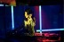

Paraisos Artificiais
Pasifik Okyanusu’nun iki uzak ucundan alakasız iki insan, duygularını birbirlerine kaç kez açabilir? Paraisos Artificiais, Brezilya’dan Amsterdam’a ilginç tesadüflerin hikayesi. Acı tecrübelerin, güzel anılarla kesiştiği filmimiz, iyi kurgulanmış zaman atlamaları ile etkileyici bir anlatıma sahip.
Film bitince fark ediyoruz ki: Elektronik müzik de gayet aşkı anlatabilir.
- Yazının Yayın Tarihi: 02/04/2013
- Yazar: Emrah Mokan
- Tür Dram Yönetmen Marcos Prado Oyuncular Livia de Bueno, Luca Bianchi, Nathalia Dill Yapım Yılı 2012 Süre 96
- Stripfilm Tagleri: Film-Müzik Ortaklığı, Kayda Değer OST, Rock'n Roll'dan Farklı Bir Müzikal Yoğunluk, Uyuşturucu Kullanımı veya Tribal
bu resmin orijinali http://paraisosartificiaisofilme.com.br adresinde yayınlanmıştır